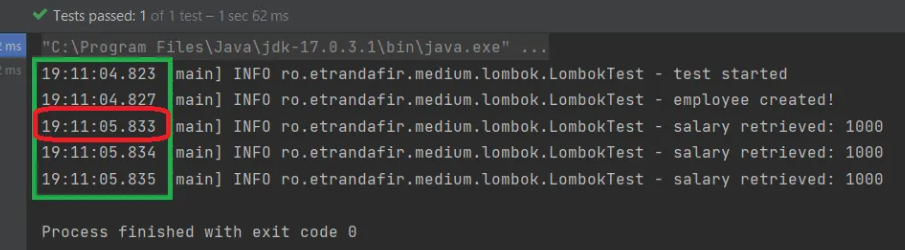

Lombok's "Lazy" Magic and the O.O.P. Alternative
Published: February 12, 2023
Overview
In this article, we'll tackle a widespread issue: the usage of convoluted logic in constructors. We'll then demonstrate how this can be remedied with Lombok's lazy loading feature. Lastly, we'll contrast Lombok's solution with its object-oriented programming counterpart: the decorator pattern.
For the code examples in this article, we'll use the Employee class that has two final fields: the employee name and the salary. The employee name is passed as a parameter during object construction, while the salary is determined through a potentially time-consuming calculation.
This calculation could involve a complex mathematical formula or a network call, for example:
class Employee {
private final String name;
private final BigDecimal salary;
public Employee(String name) {
this.name = name;
this.salary = calculateSalary();
}
// slow operation
static BigDecimal calculateSalary() { /* ... */ }
// ...
}
Though, there is a design smell in the code snippet above. Namely, we should avoid performing heavy operations inside the constructor: the construction of the object should be rather fast.
Lombok's "Lazy" Magic
To ensure efficient salary calculation, one approach is to utilize
Lombok's @Getter(lazy = true).
This annotation provides a convenient way to calculate the salary only once
and cache its value for future reference:
class Employee {
private final String name;
// constructor
@Getter(lazy = true)
private final BigDecimal salary = calculateSalary();
// ...
}
Not only does this approach enhance performance, but it also improves the design of our code. By calculating the salary only when it is first accessed, instead of in the constructor, the code becomes more flexible and efficient:
@Test
void test() {
log.info("test started");
var employee = new Employee("john doe");
log.info("employee created!");
var s = employee.getSalary();
log.info("salary retrieved: " + s);
s = employee.getSalary();
log.info("salary retrieved: " + s);
s = employee.getSalary();
log.info("salary retrieved: " + s);
}
Assuming the calculateSalary() method involves I/O and takes a long time, we'd want following behavior from our lazy getter:
- a fast constructor;
- a slow initial evaluation of the salary;
- fast subsequent evaluations;

As expected, the constructor is fast and the first retrieval of the salary is slow: after that, the value is cached and everything goes fast.
The O.O.P. Alternative
While the use of the lazy getter has its advantages, it also introduces an element of 'magic' into our code.
It's important to consider the trade-offs and weigh the benefits against the potential consequences. This time, we can achieve the same functionality by applying the "decorator" design pattern.
Firstly, let's revert to the initial version of the Employee class:
class Employee {
private final String name;
// constructor
private BigDecimal getSalary() {
return calculateSalary();
}
// slow operation
static BigDecimal calculateSalary() { /* ... */ }
//...
}
Now, let's create a very simple implementation of an EmployeeWithCachedSalary class that extends Employee and wraps the original instance. We do not have a common interface to implement, and, for this simple use case, we won't overcomplicate the example:
class EmployeeWithCachedSalary extends Employee {
private final AtomicReference<BigDecimal> cachedSalary = new AtomicReference<>();
private final Employee delegate;
// constructor
@Override
public BigDecimal getSalary() {
return cachedSalary.updateAndGet(
salary -> salary != null
? salary
: delegate.getSalary()
);
}
// any other method calls will be delegated
// to the decorated Employee instance:
@Override
public String getName() {
return delegate.getName();
}
}
As we can see, when overriding the getSalary() method,
we use an AtomicReference
This approach has the advantage of extracting the logic about caching the salary value away from the Employee class, giving us more flexibility.
In order to use this decorator, we'll create a new instance of EmployeeWithCachedSalary wrapping the original Employee object:
@Test
void test() {
log.info("test started");
Employee employee = new EmployeeWithCachedSalary(new Employee());
log.info("employee created!");
BigDecimal salary = employee.getSalary();
log.info("salary retrieved: " + s);
salary = employee.getSalary();
log.info("salary retrieved: " + s);
salary = employee.getSalary();
log.info("salary retrieved: " + s);
}
Conclusion
In this short article, we delved into the @Getter(lazy = true) feature of Lombok,
starting with a discussion on the issue it aims to address
— the negative impacts of incorporating complex logic within constructors.
We then showcased how Lombok comes to the rescue, followed by a presentation of the object-oriented programming alternative, the Decorator Pattern.